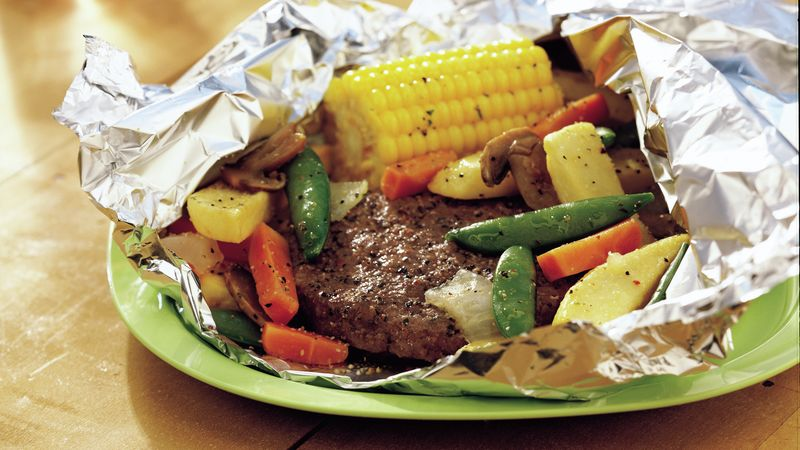

Burger Veggie Foil Pack

Ingredients
- 1 pound extra-lean ground beef
- 1 tablespoon Worcestershire sauce
- 1 teaspoon garlic-pepper blend
- 1/2 teaspoon onion powder
- 1/4 teaspoon salt
- 2 cups frozen sugar snap peas, carrots, onions and mushrooms
- 32 frozen steak fries
- 4 frozen half-ears corn-on-the-cob
- 1/2 teaspoon garlic-pepper blend
Recipe
- Heat oven to 450°. Cut four 18x12-inch sheets of aluminum foil.
- Mix beef, Worcestershire sauce, 1 teaspoon garlic-pepper blend, the onion powder and salt. Shape mixture into 4 patties, about 1/4 inch thick.
- Place 1 patty on each foil sheet about 2 inches from 12-inch side. Top each with 1/2 cup vegetables and 8 steak fries. Place 1 piece of corn next to each patty. Divide remaining 1/2 teaspoon garlic-pepper blend among vegetables. Bring up 2 sides of foil so edges meet. Seal edges, making tight 1/2-inch fold; fold again, allowing space for heat circulation and expansion. Fold other sides to seal. Place packets on large cookie sheet
- Bake 35 to 40 minutes or until meat thermometer inserted in center of patties reads 160°F. Place packets on plates. To serve, cut large X across top of each packet; carefully fold back foil.